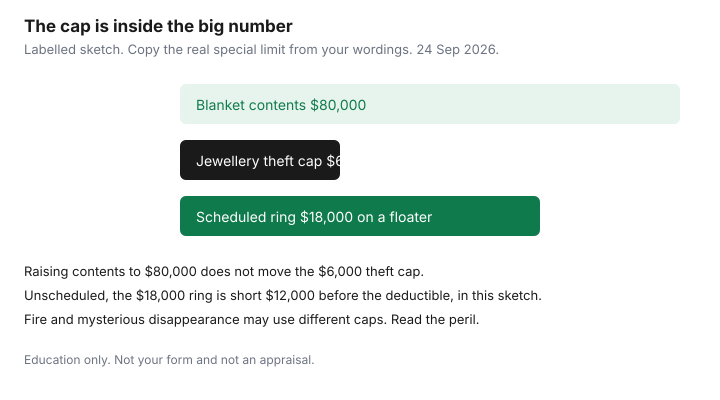

Insurance · Canada
Scheduled Valuables on Canadian Home and Tenant Policies: When Floaters Beat Blanket Limits
A home or tenant policy can show a large contents limit and still pay a few thousand dollars for a stolen ring. The smaller number is a special limit on unscheduled personal property. It sits inside the contents limit. Raising the blanket contents figure does not lift it. Scheduling the item — a floater or rider with its own amount — is how households insure a piece of jewellery, a bike, or a camera for what it would actually cost to replace. This page is the way to find the cap, decide when a floater beats a higher blanket, and keep the paperwork that stops an under-settlement. It is education. It is not a policy and not an appraisal.
Tenant packages use the same idea as homeowner packages: contents, special limits, and optional scheduled articles. The dollars differ by form. Copy them from the wordings page, not from a neighbour’s renewal.
Disclosure: This page is education. Home and tenant quote flows are an offer type. Saving Optimizer may earn a commission if partner links are added later. We do not currently claim an insurer or broker partnership, and we do not rank companies. We do not sell policies. Special limits below that use dollar figures are labelled illustrations, not a national cap. Pages were read on 24 Sep 2026.
Key takeaways
- Read the special limits for jewellery, bicycles, cash, and collectibles before you trust the contents limit. Theft and mysterious disappearance are often capped differently from other perils.
- Increasing blanket contents does not, by itself, remove a special limit. A floater insures a named item for a scheduled amount.
- Insurers want an appraisal or a receipt they will accept. Ask how recent the appraisal must be. There is no single national age.
- A rider often follows the item off the premises. A travel medical policy is not a jewellery floater.
- Gifts, inheritances, and renovations that add art or jewellery belong on the schedule before the loss, not in the claim letter after it.
- Photos, appraisals, and serial numbers stored outside the house are what keep a settlement from dropping to a special limit you cannot document.
Find the unscheduled personal-property special limits for jewellery, bikes, and cash
Open the wordings, not the one-page brochure. You are looking for a schedule of special limits of insurance on unscheduled personal property. The categories that surprise middle-aged households are jewellery and watches, furs, bicycles, cash and gift cards, securities, and collectibles or fine art. Watercraft and business property often have their own caps. The limit may apply per item, per occurrence, or to the whole category. It may apply only to theft, or to theft and mysterious disappearance, while fire still pays up to the contents limit. Copy the peril, not just the dollar.
| Category | Write the special limit | Which perils does the cap apply to? |
|---|---|---|
| Jewellery, gems, watches, furs | Theft only, or any cause of loss? | |
| Bicycles, e-bikes, and sports gear | Is an e-bike even “personal property,” or is it excluded as a motor vehicle? See the e-bike guide before you assume a bicycle sub-limit applies. | |
| Cash, gift cards, bullion | Often a few hundred dollars. Confirm. Do not store the emergency fund in a drawer and call it insured. | |
| Art, coins, stamps, musical instruments | Category cap versus a single-item cap. |
The Financial Consumer Agency of Canada’s insurance overview tells households to read what a policy covers and what it excludes before they buy. It does not publish a national jewellery limit, because there is not one. A labelled illustration, so the arithmetic is visible: a contents limit of $80,000 and a jewellery theft special limit of $6,000 means a stolen $18,000 ring is uninsured for $12,000 if it was never scheduled, before the deductible. Fire might be treated differently on that form. The illustration is not your form. If your special limit is $2,000 or $10,000, redo the subtraction. Tenant policies are capable of the same gap at a lower contents limit. The tenant comparison guide is the liability and price worksheet. This page is the sub-limit it does not replace.

Appraisal and receipt standards insurers accept for scheduling
Scheduling means the company agrees a named item is insured for a stated amount. They will not do that from a text message that says “about eight thousand.” Ask what they accept before you pay for an appraisal you cannot use.
- Jewellery. A written appraisal from a jeweller or gemmologist the insurer will accept, describing the stones, metals, and the replacement value. Ask how recent it must be. Many brokers talk about appraisals a few years old. That is a market habit, not a statute. If the company wants one from the last 24 months, a 2014 appraisal is a story, not a schedule.
- Recent purchases. A receipt with the seller, the date, and the item description can be enough for a new piece. A credit-card line that says “jewellery store” is not a description.
- Bikes and electronics. Make, model, serial number, and the purchase date. A photo of the serial plate is part of the file.
- Art and collections. Ask whether they want a dealer invoice, a formal appraisal, or both. A collection scheduled as one number can settle as one number. If one print matters, name it.
The amount you schedule is the amount you are insuring, not a wish. Under-scheduling to save premium recreates the special-limit problem on purpose. Over-scheduling does not guarantee a windfall. Settlements follow the wording: replacement cost, agreed value, or actual cash value are different promises. Read which one the rider uses, the same way the replacement-cost guide reads the building.
Floater vs increasing blanket contents: cost and coverage trade-offs
Two levers get quoted as if they were the same purchase. They are not.
| Question | Higher blanket contents | Scheduled floater |
|---|---|---|
| Does the jewellery theft cap rise? | Usually no. Confirm. The special limit is a sub-limit. | The named item is insured for the scheduled amount, subject to the rider’s wording. |
| Mysterious disappearance | Often excluded or capped for jewellery. | Often included. Read the rider. Do not assume. |
| Deductible | The policy deductible, which can swallow a small loss. | Sometimes a lower or nil deductible on the scheduled item. Ask. |
| Price | A rate on all contents, including the couch. | A rate on the scheduled value. Compare dollars, not the feeling that “blanket is simpler.” |
A floater is worth it when the item’s value sits above the special limit and you would actually replace it. It is a weak buy when the item is under the special limit, you would not replace it, or the premium over a few years exceeds the amount you could set aside. A labelled habit: if the rider costs $90 a year on an $8,000 ring you would replace, that is a different decision from $90 a year on a $400 watch the special limit already covers. Home and tenant quote flows are an offer type for seeing the two prices. Match the special limits and the deductible before you call one quote cheaper. The home shopping guide is the same-limits worksheet for the building. Do not strip sewer-backup or liability to fund a ring.
Off-premises and travel exposure: what a rider actually follows
Unscheduled contents are often covered away from home only as a percentage of the contents limit, and the special limits still apply. A ring worn on a trip can be inside both a reduced off-premises amount and a jewellery theft cap. Read those two sentences together. A scheduled rider is the form that usually follows the named item. “Usually” is not your wording. Ask: worldwide or Canada only, in a car, in checked luggage, while with a jeweller for repair, and whether theft from an unattended vehicle is excluded.
A travel medical policy pays medical bills. It is not a floater for the engagement ring. A credit-card purchase-protection certificate, if you have one, is a short, conditional benefit on a new purchase. Read the certificate’s days and its cap. It does not replace a schedule on a piece you have owned for a decade. Tell the insurer if the item lives part of the year at a cottage or a child’s apartment. “Off premises” and “regularly kept elsewhere” are different facts on some forms.
Update schedule after gifts, inheritance, or major purchases
The schedule is a list with dates, not a memory of what you owned when you bought the house. Update it when the list changes.
- A gift or an inheritance. The giver’s appraisal may be old, and the item may never have been on your policy. Get a value the insurer will accept and add it before you wear it out of the house.
- A purchase above the special limit. Add it in the same week as the receipt. Waiting for renewal is how a January theft meets a March schedule.
- A sale, a loss, or a grown child who took the bike. Remove it so you stop paying, and so a claim does not include an item you no longer have.
- A remount or a stone replacement. The old appraisal is now wrong. Send the new one.
Put a reminder next to the annual review. Inheritance is also a moment when people discover a collection in a parent’s house that was never scheduled. Do not ship it to your home and assume the estate’s policy still responds after the property was distributed. Ask both insurers, in writing, which policy responds during the move.
Claim documentation habits that prevent under-settlement
Under-settlement is often a missing piece of paper, not a hostile adjuster. The habit is dull and it works.
- Photograph items on a day you are not claiming: the piece, any engraving, and the serial number. Keep the photos and the appraisal somewhere other than the house that can burn.
- For a theft, report it to police and keep the report number. For a mysterious disappearance, read whether the rider even covers that word before you describe the loss in a way the form excludes.
- Do not throw out damaged jewellery or a broken bicycle until the adjuster says so. Do not authorise a jeweller to melt a piece “so it can be rebuilt” before there is agreement on the value.
- Ask for the settlement calculation in writing: scheduled amount, deductible, depreciation if the wording is actual cash value, and any special limit they are still applying. If they apply a special limit to an item you scheduled, that is the moment to point at the rider.
- The home-claim guide is the notice and proof-of-loss sequence. A scheduled-article claim still follows it. Do not skip notice because the rider “is separate.”
If the offer is the special limit and you never scheduled the item, the offer may be what the contract pays. The remedy was the schedule, bought before the loss. Updating the policy after the theft does not reopen that night.
Sources & date stamps
- Financial Consumer Agency of Canada, getting insurance — read coverages and exclusions before you buy. No national jewellery dollar. Used 24 Sep 2026.
- Saving Optimizer, home shopping, tenant insurance, replacement cost versus actual cash value, e-bike theft, and the home-claim guide — context for limits, deductibles, and notice. Special-limit dollars in the sketch are illustrations.
Frequently asked questions
Does a higher contents limit raise my jewellery theft cap?
Usually no. A special limit is a sub-limit inside contents. Raising the blanket does not lift it unless the wording says so. A scheduled floater insures a named item for a stated amount.
Is there a standard Canadian dollar cap for jewellery?
No. Copy the special limit and the perils it applies to from your wordings. Any dollar figure in the sketch on this page is an illustration.
What appraisal will an insurer accept?
Ask before you pay. Jewellery often needs a written appraisal; a new purchase may be scheduled from a receipt that describes the item. How recent the appraisal must be is a company rule, not a statute.
Does travel medical insurance cover a stolen ring?
No. Travel medical pays medical bills. A scheduled rider is what usually follows a named item, and only on the wording you bought. Read territorial limits and unattended-vehicle exclusions.
Is this insurance advice?
No. Education only. Home and tenant quote flows are an offer type. We do not claim an insurer partnership.